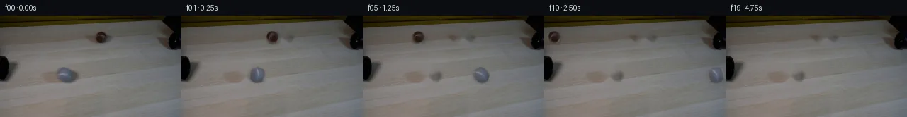
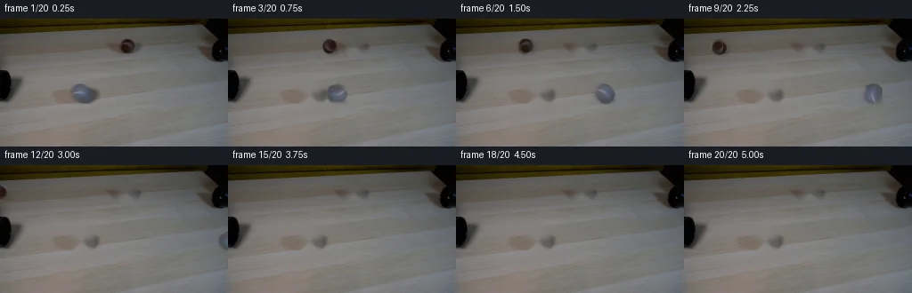
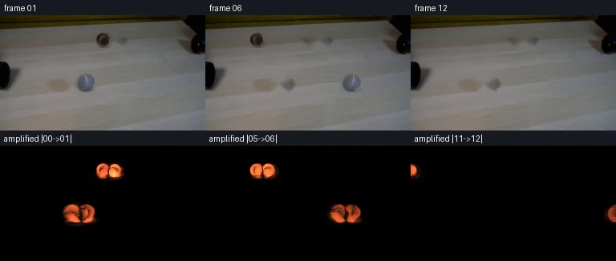

V0 · 初版 · 最终提交
![]()
Observable Generation Trace
把最终像素视频、Harness 冻结的每轮候选、真实工具事件和 Agent 自述放在同一页。可观测证据与模型自述分开标记，避免把“模型说它检查过”误当成真实工具调用。
![首帧]()
Static locked-off single-shot with fixed frame throughout filmed with constant framerate in real-time. The scene shows a realistic scientific demonstration. The scene only contains the described setup and actions. The two black pipes are on opposite sides of the light-colored wooden table, but offset of each other. The brown and the grey tennis balls roll with high speed straight out of the two black pipes.
首帧显示在左侧播放器初始画面。Track 权限、隔离和 tensor 一致性来自 run manifest，而不是 METHOD.md。
默认勾选初版和最终版；可选其他版本一起同步播放。仅检查图更新的连续重复快照已合并，回退旧视频仍保留为一次修订。
Observable events
来源：events.jsonl + run manifest
此 Track 禁止读取输出图片。逐轮预览由外部 Harness 自动冻结，只用于事后审计，生成 Agent 当时看不到这些页面。
Frozen candidates
每张图来自该 round 的真实 00 / 01 / 05 / 10 / 19 帧

pixels ddb56f4adc5ad1d5 · code 922c713e5f306854
--- previous/generate.py +++ current/generate.py @@ -0,0 +1,222 @@ +#!/usr/bin/env python3 +"""Generate the PixelWorld-Text continuation using deterministic local pixel operations.""" + +from pathlib import Path + +import cv2 +import numpy as np +from PIL import Image, ImageDraw, ImageFont + +import artifact_io + + +ROOT = Path(__file__).resolve().parent +WIDTH, HEIGHT = 256, 144 + + +def ellipse_mask(shape, center, radii, feather=0.0): + """Return a floating ellipse mask, optionally feathered inward at its edge.""" + h, w = shape + yy, xx = np.mgrid[:h, :w] + cx, cy = center + rx, ry = radii + distance = np.sqrt(((xx - cx) / rx) ** 2 + ((yy - cy) / ry) ** 2) + if feather <= 0: + return (distance <= 1.0).astype(np.float32) + # feather is expressed as a fraction of the normalized radius + return np.clip((1.0 - distance) / feather, 0.0, 1.0).astype(np.float32) + + +def make_sprite(source, center, radii, margin=4): + """Cut a photographed ball into an RGBA-like RGB/alpha sprite.""" + cx, cy = center + rx, ry = radii + half_w, half_h = int(np.ceil(rx + margin)), int(np.ceil(ry + margin)) + x0, x1 = cx - half_w, cx + half_w + 1 + y0, y1 = cy - half_h, cy + half_h + 1 + rgb = source[y0:y1, x0:x1].copy() + yy, xx = np.mgrid[y0:y1, x0:x1] + d = np.sqrt(((xx - cx) / rx) ** 2 + ((yy - cy) / ry) ** 2) + alpha = np.clip((1.07 - d) / 0.14, 0.0, 1.0).astype(np.float32) + return rgb, alpha, (half_w, half_h) + + +def rotate_sprite(rgb, alpha, angle): + """Rotate source texture and alpha around the sprite center.""" + h, w = alpha.shape + matrix = cv2.getRotationMatrix2D(((w - 1) / 2, (h - 1) / 2), angle, 1.0) + rotated_rgb = cv2.warpAffine( + rgb, + matrix, + (w, h), + flags=cv2.INTER_CUBIC, + borderMode=cv2.BORDER_REFLECT_101, + ) + rotated_alpha = cv2.warpAffine( + alpha, + matrix, + (w, h), + flags=cv2.INTER_CUBIC, + borderMode=cv2.BORDER_CONSTANT, + borderValue=0, + ) + return rotated_rgb, np.clip(rotated_alpha, 0.0, 1.0) + + +def composite(frame, rgb, alpha, center, opacity=1.0): + """Alpha-composite a possibly clipped sprite into a uint8 frame.""" + h, w = alpha.shape + cx, cy = center + left = int(round(cx - (w - 1) / 2)) + top = int(round(cy - (h - 1) / 2)) + x0, y0 = max(0, left), max(0, top) + x1, y1 = min(WIDTH, left + w), min(HEIGHT, top + h) + if x0 >= x1 or y0 >= y1: + return + sx0, sy0 = x0 - left, y0 - top + sx1, sy1 = sx0 + (x1 - x0), sy0 + (y1 - y0) + a = (alpha[sy0:sy1, sx0:sx1] * opacity)[..., None] + dst = frame[y0:y1, x0:x1].astype(np.float32) + src = rgb[sy0:sy1, sx0:sx1].astype(np.float32) + frame[y0:y1, x0:x1] = np.clip(dst * (1.0 - a) + src * a, 0, 255).astype(np.uint8) + + +def add_contact_shadow(frame, center, radii, strength): + """Darken a small blurred ellipse beneath a moving ball.""" + cx, cy = center + rx, ry = radii … diff truncated; 135 more lines …
Final visual checks
Harness 保存的最终产物


Agent claims
以下文字由生成 Agent 撰写，不等同于工具证据
The source is an RGB image at exactly 256 x 144 pixels. All observations below were made through local numeric RGB inspection, scanlines, connected components, and color statistics; no image viewing tool was used.
x=0..11, y=59..91; its rim/shaded outer edge extends to about x=24.x=241..255, y=15..46; its softer rim extends leftward to about x=224.(92, 84). Its colored body is approximately x=82..102, y=74..95, with an effective radius near 11 pixels and a softer contact/shadow footprint below it.(141, 31). Its colored body is approximately x=133..150, y=22..39, with an effective radius near 9 pixels.The frame rate is 4 fps and the camera, pipes, and table remain locked throughout. Both balls retain constant high linear speed and roll without bouncing. The grey ball advances about 15 pixels per frame toward the right; the brown ball advances about 12 pixels per frame toward the left. Ball texture is rotated in proportion to travel so the motion reads as rolling. A short, low-opacity directional blur is included while each ball is on screen.
| Frame | Time | Planned action |
|---|---|---|
| 00 | 0.00 s | Exact unmodified source frame: grey at (92,84), brown at (141,31); both already clear of the pipe mouths. |
| 01 | 0.25 s | Grey rolls right to about x=107; brown rolls left to about x=129. |
| 02 | 0.50 s | Grey x=122; brown x=117; lanes remain vertically separated. |
| 03 | 0.75 s | Grey x=137; brown x=105. |
| 04 | 1.00 s | Grey x=152; brown x=93. |
| 05 | 1.25 s | Grey x=167; brown x=81. |
| 06 | 1.50 s | Grey x=182; brown x=69. |
| 07 | 1.75 s | Grey x=197; brown x=57. |
| 08 | 2.00 s | Grey x=212; brown x=45. |
| 09 | 2.25 s | Grey x=227; brown x=33. |
| 10 | 2.50 s | Grey x=242 and begins crossing the right boundary; brown x=21. |
| 11 | 2.75 s | Grey is almost fully beyond frame-right; brown x=9 and begins crossing frame-left. |
| 12 | 3.00 s | Both balls have rolled out of view; only the fixed apparatus and table remain. |
| 13 | 3.25 s | Static locked-off setup after the demonstration. |
| 14 | 3.50 s | Static locked-off setup. |
| 15 | 3.75 s | Static locked-off setup. |
| 16 | 4.00 s | Static locked-off setup. |
| 17 | 4.25 s | Static locked-off setup. |
| 18 | 4.50 s | Static locked-off setup. |
| 19 | 4.75 s | Static final frame; no camera movement or new objects. |
The cleared ball regions will be reconstructed from adjacent tabletop texture with feathered local interpolation. Pipe pixels are never altered. Frame 00 will bypass all reconstruction and be copied exactly from first_frame.png.
This sequence was generated deterministically from first_frame.png with local Python, NumPy, Pillow, and OpenCV pixel operations. No network service, external model, external reference, image-viewing tool, or rendering engine was used.
Frame 00 is a direct RGB-array copy of first_frame.png. It bypasses all cleanup and compositing steps, and the generator asserts exact array equality before completing.
The source was measured through RGB statistics, thresholded connected components, scanlines, and text-form luminance maps. These measurements identified:
x=0..12, y=58..92;x=240..255, y=15..48;(92,84), effective body radii about (11.2,11.5);(141,31), effective body radii about (9.4,9.2).No manual visual review is claimed. inspection.png and transition_check.png were produced as required artifacts, but validation was performed numerically.
For frames 01–19, a clean tabletop plate is made by masking the two source ball bodies and their compact contact shadows. OpenCV Telea inpainting fills those small regions from adjacent table pixels. A one-pixel dilation and Gaussian feather confine the replacement to the measured footprints. The pipe regions are outside these masks and remain byte-identical to the source in every frame.
Each ball is cut directly from the source into an RGB sprite with a feathered elliptical alpha mask. The photographed color, shading, and local surface variation are therefore retained. The sprites are rotated with cubic resampling in proportion to their travel and then composited back over the clean plate.
(92,84) toward frame-right at 15 pixels per frame.(141,31) toward frame-left at 12.8 pixels per frame.The camera, table, pipes, perspective, and illumination never move.
artifact_io.save packs each RGB pixel into uint32 0xRRGGBB values with tensor shape (144, 256, 20), writes the 20 PNG frames, builds the inspection contact sheet, and embeds the same data in the standalone HTML player.
The generator then independently reloads pixels.npz and every PNG and asserts:
(144, 256, 20) and dtype is uint32;first_frame.png exactly.transition_check.png contains frames 01, 06, and 12 together with amplified absolute-difference maps for transitions 00→01, 05→06, and 11→12. Numeric region checks additionally confirmed that both pipe crops have zero changed pixels across all 20 frames.